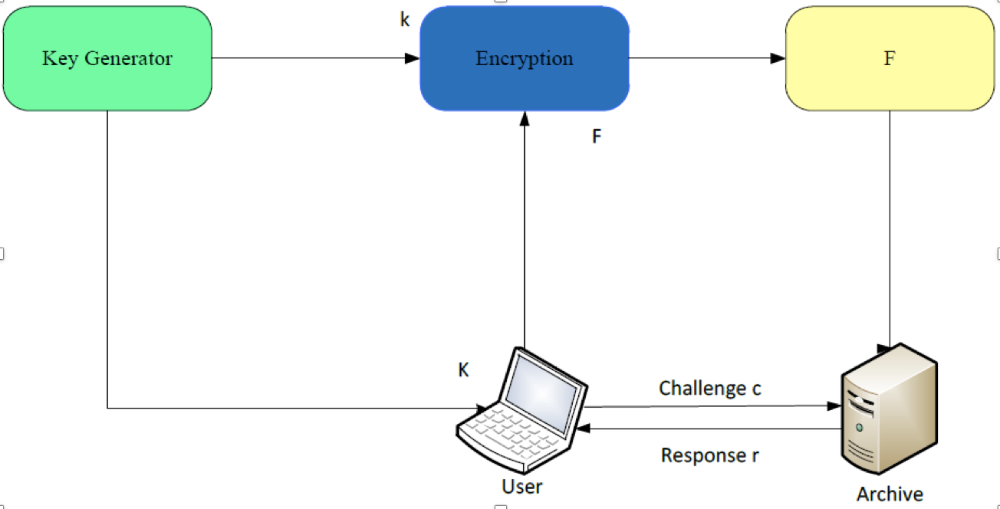

Data security in cloud with Third party auditor
Abstract
Cloud computing is a model for enabling ubiquitous, convenient, on-demand network access to a shared pool of configurable computing resources (e.g., networks, servers, storage, applications, and services) that can be rapidly provisioned and released with minimal management effort or service provider interaction. Cloud is environment where services are provided by CSP(Cloud Service Provider) on pay per use base. Client has to pay for only those services which he/she is using or want to use. Cloud is one type of centralized database or Centralized store where many organizations/clients store their data,access data and possibly modify data. Data stored and retrieved in such a way may not be fully trustworthy so here concept of TPA(Third Party Auditor) is used for the ease of client. TPA will verify integrity of data stored on behalf of client. In cloud, clients can insert, delete or can update data means here is support for dynamic data store so there should be security mechanism which ensure integrity for the same. TPA can not only see the data but he can access data or can modify also so here in our mechanism the data is encrypted at user level before sending to CSP for further process. Hence in our algorithm it preserves data integrity and also focus on data dynamics.
Introduction
Cloud computing is the key driving force in many small, medium and large sized companies. As many cloud users seek the services of cloud computing, the one question that remains their major concern is the security of their data in the cloud. Data management, data privacy and security are concerns for every cloud user, and the cloud provider too. With more and more companies looking into cloud computing, understanding cloud data security issues is important.
Cloud computing is a research area which is growing faster than any other research area. It provides a wide range of applications under different topologies and every topology derives some new specialized protocols. In this research, we will present an introduction to a cloud computing that is expected to be adopted by governments, manufacturers and academicians in the very near future. It directly affects the company, government and convenience to the small user. It is the technology of building a robust data security between CSP and User. This promising technology is literally called Cloud Data Security. In this research, an introduction to the technology of Cloud Computing, TPA, data security and security algorithm will be presented.
Literature Review
A straightforward approach like message authentication codes (MACs) can be used to protect the data integrity. Initially, data owners can locally maintain a small amount of MACs for the data files to be outsourced. Whenever the data owner needs to retrieve the file, she can verify the integrity by recalculating the MAC of the received data file and comparing it to the local precomputed value. While this method allows data owners to verify the correctness of the received data from the cloud, but if the data file is large, MACs cannot be employed. For large data file a hash tree can be employed, where the leaves are hashes of data blocks and internal nodes are hashes of their children of the tree. The data owner only needs to store the root hash of the tree to authenticate her received data. But it does not give any assurance about the correctness of other outsourced data. So TPA can be use who performs this thing for data owner.
There are various mechanisms proposes for how to use the TPA so that it relieves the burden of data owner for local data storage and maintenance, it also eliminates their physical control of storage dependability and security, which traditionally has been expected by both enterprises and individuals with high service-level requirements. Such an audit service not only helps save data owners‘ computation resources but also provides a transparent yet cost-effective method for data owners to gain trust in the cloud.
The introduction of TPA eliminates the involvement of the client through the auditing of whether his data stored in the cloud are indeed intact, which can be important in achieving economies of scale for Cloud Computing[2]. This method saves the computational resource and cost of storage of data of the owner but how to trust on TPA that is not calculated. If TPA becomes intrusive and pass information of data owner to unauthorized user or TPA also modifying a data or deleting a data than how owner know about this problem are not solved. Thus, new approaches are required to solve the above problem.
The author Ateniese et al. [8] are the first to consider the public adaptability in their defined ―provable data possession‖ (PDP) model for ensuring possession of data files on untrusted storages. Their scheme utilizes the RSA-based homomorphic authenticators for auditing outsourced data and suggests randomly sampling a few blocks of the file. However, the public auditability in their scheme demands the linear combination of sampled blocks exposed to the external auditor. When used directly, their protocol is not provably privacy preserving, and thus may leak user data information to the auditor.
The author Cong Wang et al. [15] utilize the public key based homomorphic authenticator and uniquely integrate it with random mask technique to achieve a privacy-preserving public auditing system for cloud data storage security while keeping all above requirements in mind. To support efficient handling of multiple auditing tasks, we further explore the technique of bilinear aggregate signature to extend our main result into a multi-user setting, where TPA can perform multiple auditing tasks simultaneously.
The simplest Proof of retrievability (POR) scheme can be made using a keyed hash function hk(F). In this scheme the verifier, before archiving the data file F in the cloud storage, pre-computes the cryptographic hash of F using hk(F) and stores this hash as well as the secret key K. To check if the integrity of the file F is lost the verifier releases the secret key K to the cloud archive and asks it to compute and return the value of hk(F). By storing multiple hash values for different keys the verifier can check for the integrity of the file F for multiple times, each one being an independent proof. Though this scheme is very simple and easily implementable the main drawback of this scheme are higher resource costs it requires for the implementation. At the verifier side this involves storing as many keys as the number of checks it wants to perform as well as the hash value of the data file F with each hash key. Also computing the hash value for even a moderately large data files can be computationally burdensome for some clients (PDAs, mobile phones, etc.). As the archive side, each invocation of the protocol requires the archive to process the entire file F. This can be computationally burdensome for the archive even for a lightweight operation like hashing. Furthermore, it requires that each proof requires the prover to read the entire file F - a significant overhead for an archive whose intended load is only an occasional read per file, where every file to be tested frequently [3].
The author Ari Juels and Burton S. Kaliski Jr proposed a scheme called Proof of retrievability for large files using ‖sentinels‖[3]. In this scheme, unlike in the key-hash approach scheme, only a single key can be used irrespective of the size of the file or the number of files whose retrievability it wants to verify.
 Figure 1. Schematic view of a proof of retrievability based on inserting random sentinels in the data file F [3].
Also the archive needs to access only a small portion of the file F unlike in the key-hash scheme which required the archive to process the entire file F for each protocol verification. This small portion of the file F is in fact independent of the length of F. The schematic view of this approach is shown in Figure1.
In this scheme special blocks (called sentinels) are hidden among other blocks in the data file F. In the setup phase, the verifier randomly embeds these sentinels among the data blocks. During the verification phase, to check the integrity of the data file F, the verifier challenges the prover (cloud archive) by specifying the positions of a collection of sentinels and asking the prover to return the associated sentinel values. If the prover has modified or deleted a substantial portion of F, then with high probability it will also have suppressed a number of sentinels. It is therefore unlikely to respond correctly to the verifier. To make the sentinels indistinguishable from the data blocks, the whole modified file is encrypted and stored in the archive. The use of encryption here renders the sentinels indistinguishable from other file blocks. This scheme is best suited for storing encrypted files.
As this scheme involves the encryption of the file F using a secret key it becomes computationally cumbersome especially when the data to be encrypted is large. Hence, this scheme proves disadvantages to small users with limited computational power (PDAs, mobile phones etc.). There will also be storage overhead on the server, partly due to the newly inserted sentinels and partly due to the error correcting codes that are inserted. Also the client needs to store all the sentinels with it, which may be storage overhead to thin clients (PDAs, low power devices etc.).
In particular, simply downloading the file for its integrity verification is not a practical solution as it requires high cost of input/output and transmission cost across the network. Also it is not easy to check the data thoroughly and compare with our data.
Considering the large size of the outsourced data and the owner‘s constrained resource capability, the tasks of auditing the data correctness in a cloud environment can be formidable and expensive for data owners. Hence, to fully ensure data security and save data owners‘ computation resources, we propose to enable publicly auditable cloud storage services, where data owners can resort to an external TPA to verify the outsourced data when needed. Third party auditing provides a transparent and cost-effective approach for establishing trust between client and cloud service provider. In fact, based on the audit report of TPA, the released audit result would help the data owner to evaluate the risk of their subscribed cloud data services, and also beneficial for the CSP to improve their cloud based service platform.
References
[1] Cloud Computing Research, PDS Group, TU Delft http://www.pds.ewi.tudelft.nl/~iosup/research_cloud.html
[2] Qian Wang, Cong Wang, Kui Ren, Wenjing Lou, Jin Li,‖ Enabling Public Auditability and Data Dynamics for Storage Security in Cloud Computing‖ in IEEE TRANSACTIONS ON PARALLEL AND DISTRIBUTED SYSTEMS, Vol. No. 22, Issue 5, MAY 2011
[3] Cong Wang and Kui Ren, Wenjing Lou, Jin Li,‖Toward Publicly Auditable Secure Cloud Data Storage Services‖ in IEEE Network July/August 2010
[4] P. Mell and T. Grance, ―Draft NIST Working Definition of Cloud Computing,‖ 2009; http://csrc.nist.gov/groups/SNS/cloud-computing/index.html
[5] M. Armbrust et al., ―Above the Clouds: A Berkeley View of Cloud Computing,‖ Univ. California, Berkeley, Tech. Rep. UCBEECS-2009-28, Feb. 2009.
[6] M. Krigsman, ―Apple‘s MobileMe Experiences Post-Launch Pain,‖ July 2008; http://blogs.zdnet.com/projectfailures/?p=908
[7] A. Juels, J. Burton, and S. Kaliski, ―PORs: Proofs of Retrievability for Large Files,‖ Proc. ACM CCS ‗07, Oct. 2007, pp. 584–97.
[8] G.Ateniese et al., ―Provable Data Possession at Untrusted Stores,‖ Proc. ACM CCS ‗07, Oct. 2007, pp. 598–609.
[9] M. A. Shah et al., ―Auditing to keep Online Storage Services Honest,‖ Proc. USENIX HotOS ‗07, May 2007.
[10] G. Ateniese et al., ―Scalable and Efficient Provable Data Possession,‖ Proc. SecureComm ‗08, Sept. 2008.
[11] Cong Wang, Qian Wang, Kui Ren, and Wenjing Lou,‖Privacy-Preserving Public Auditing for Data Storage Security in Cloud Computing‖ in IEEE INFOCOM 2010, San Diego, CA, March 2010.